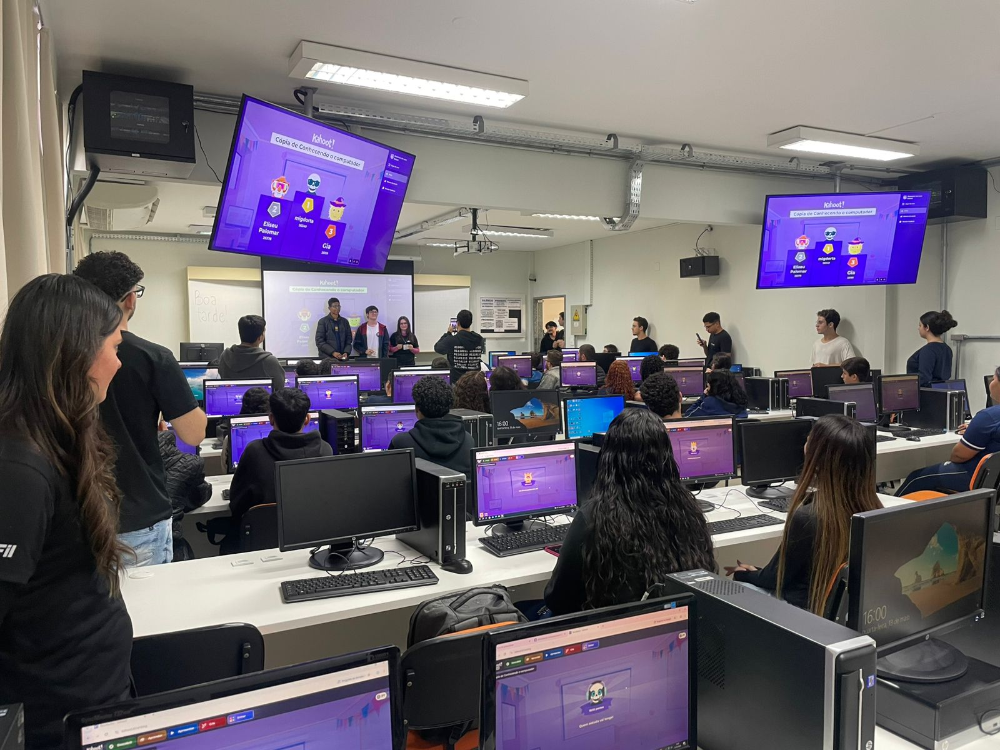
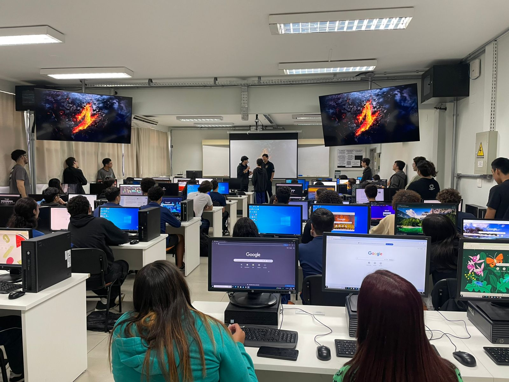
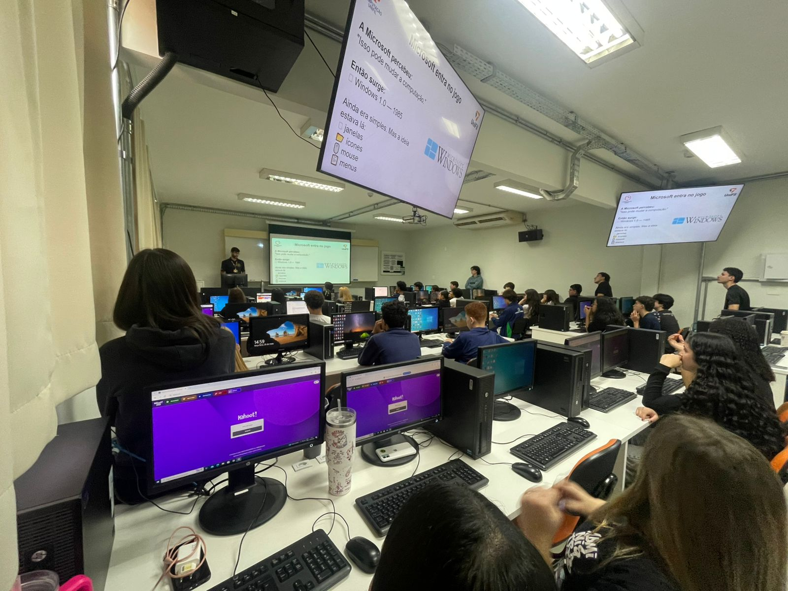
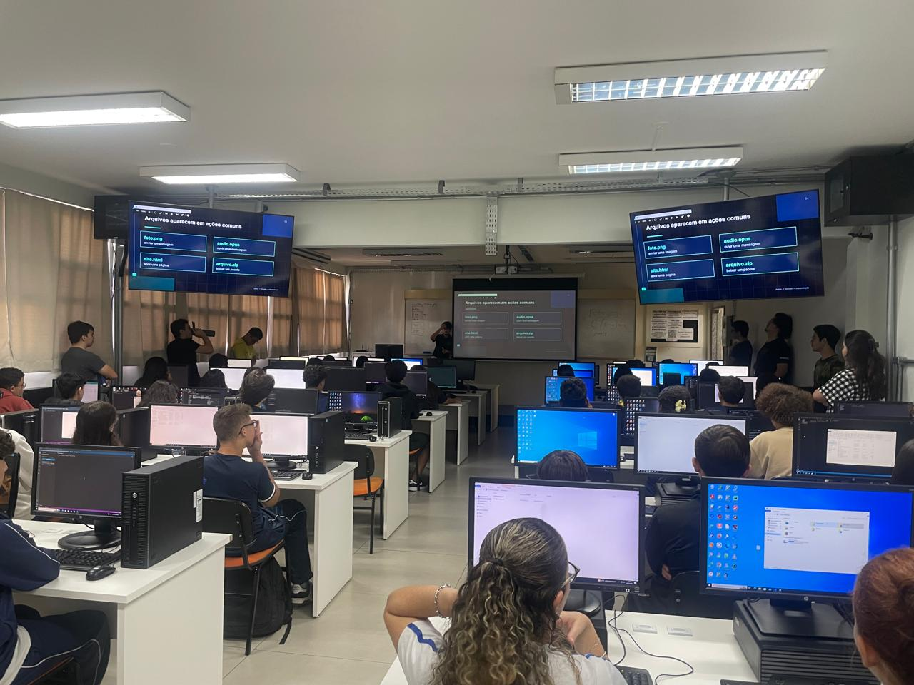
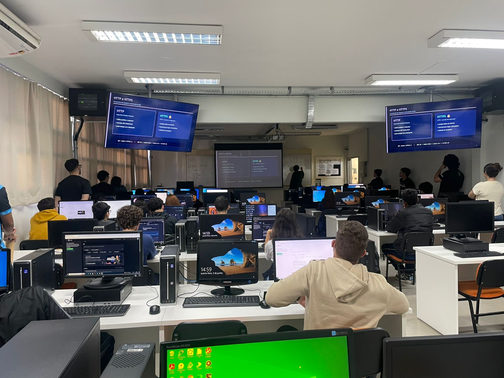

portifolio@terminal: ~/atividades/pensamento
Pensamento Computacional
Projeto de Monitoria - Aulas de Computação para Ensino Fundamental e Médio
Projeto: Pensamento Computacional | Papel: Monitor | Público Alvo: Ensino Fundamental e Médio
Sobre o Projeto
Este é um projeto de monitoria onde trabalho auxiliando alunos durante aulas de Pensamento Computacional. O objetivo é introduzir conceitos fundamentais de ciência da computação de forma lúdica e prática para crianças e adolescentes, desenvolvendo habilidades de lógica, resolução de problemas e pensamento estruturado.
Como monitor, meu papel é:
- Auxiliar os alunos na compreensão dos conceitos
- Ajudar na resolução de problemas e desafios
- Documentar as aulas e evoluções dos alunos
- Propor atividades práticas e dinâmicas
Tópicos Principais
Fundamentos
- ✓ Decomposição de Problemas
- ✓ Reconhecimento de Padrões
- ✓ Abstração
- ✓ Algoritmos
Estruturas de Dados
- ✓ Arrays e Listas
- ✓ Pilhas e Filas
- ✓ Grafos
- ✓ Árvores
Algoritmos Clássicos
- ✓ Busca Linear e Binária
- ✓ Ordenação (Bubble, Quick)
- ✓ Programação Dinâmica
- ✓ Recursão
Competências Adquiridas
Técnicas
Conceituais
Aulas Realizadas
Aula - 1
Aula - 2
Aula - 3
Aula - 4
Aula - 5
📋 Monitorias e Relatórios de Aula
Fotos e relatórios das aulas que monitoro:
Aula 1 - Avaliação Diagnóstica
Data: 13/05/2026
📝 Relatório da Aula
Tópicos abordados:
- Avaliação Diagnóstica
- Jogos de Pergunta e resposta Kahoot
Observações da monitoria:
Iniciamos as atividades como monitor às 14:00, onde me posicionei já dentro da sala, no canto da fileira. Com a chegada dos alunos, a professora Tânia solicitou que alguns monitores ajudassem com a orientação dos alunos para identificar em que sala iriam fazer a avaliação, com isso me posicionei junto com meu padrinho Luiz entre as duas escadas que temos antes de chegar aos laboratórios, conferindo o nome dos alunos nas listas das salas.
Depois disso voltei à sala e me posicionei na fileira que ficaria responsável por monitorar. 3 alunos sentaram na minha fileira: uma menina e um menino bem-humorados sentaram perto da parede onde eu estava, e um menino mais quieto no começo da fileira. Começou a aula com uma palavra da professora Tânia agradecendo aos alunos por aceitar o nosso convite e explicando como esse primeiro passo é importante para o aprendizado, e como esse curso vai ajudar com matérias do colégio, e que ao final do curso terá uma formatura, e pede que chamem seus familiares para comemorar essa data com os alunos.
Em seguida o Instrutor Luiz começou sua apresentação e apresentou o Instrutor Koga, que iria substituí-lo após o meio do ano, pois o Luiz irá se formar no curso de Ciência da Computação e infelizmente irá deixar a turma nas mãos do Instrutor Koga. Após isso, ele iniciou a apresentação dos outros instrutores do curso e suas competências: em que curso e em que período está no curso, sua linguagem com mais familiaridades e as tecnologias que eles têm mais familiaridade.
Em seguida o Instrutor Luiz começou a explicar a avaliação que eles vão fazer, que terá várias perguntas que têm como objetivo avaliar o que os alunos já têm de conhecimento da área de lógica e computação, e que não há problema em não responder às questões que não sabem. Depois disso, ele colocou o link da avaliação no slide que determinou o tempo mais ou menos do término da avaliação.
Os alunos que estavam na minha fileira estavam com dificuldade para acessar o link e me chamaram. Avaliando, vi que a aluna tinha esquecido uma "/" no link; quando eu coloquei e entrei no link, apareceu uma tela de bloqueio de segurança da rede. Assim, pedi auxílio ao Instrutor Luiz, que observou que o problema é que o link faltava uma letra, e entrou tudo normal.
Há uma aluna da fileira de trás me pediu ajuda para ligar o computador, e o menino que sentou no começo da fileira só me chamou uma vez para confirmar qual turma ele estava para colocar na avaliação. Depois disso não teve mais nenhuma dificuldade; aí só esperei todos terminarem para começar o jogo de perguntas e respostas do site Kahoot, que fizeram uma competição. Aí só me chamaram para eu escolher um avatar para ela.
Aula 2 - Historia da Computação
Data: 20/05/2026
📝 Relatório da Aula
Tópicos abordados:
- Historia da Computação
- Sistema Operacionais
Observações da monitoria:
No dia 20/05/2026 demos início à segunda aula que estou como monitor. Às 14:00 comecei orientando os alunos que estavam vindo pela primeira vez a saber se estavam alocados no laboratório 6. Nesse dia estava um pouco preocupado, pois não tinha marcado a presença, porque não tinha nem instrutor para ficar no laboratório 8.
Assim que os alunos chegaram todos e encontraram seus lugares, o instrutor Luiz deu início à aula. A primeira atividade foi cada aluno ir na primeira mesa, com ajuda de dois monitores, para pegar um crachá de identificação com seu nome. Duas alunas me chamaram e informaram que a aluna Rayssa Pegorari tinha trocado de turma; então informei o instrutor e fui para o laboratório 7 buscar o crachá da Rayssa e entregá-lo para ela no laboratório 6.
A partir daí, o instrutor Luiz começou perguntando quem estava lá pela primeira vez e comunicando que esses alunos iriam fazer a avaliação diagnóstica, como os alunos fizeram na primeira aula, e pediu que eu, como estava perto da porta, guiasse os alunos ao laboratório 3, onde iriam realizar as provas.
Depois de conduzir os alunos para a sala da prova, voltei para o meu lugar e a aula seguiu tranquila. O instrutor Luiz começou a contar e a ensinar a história dos primeiros computadores, o que é um computador e as gerações que tivemos. Depois desse conteúdo,enquanto os alunos que estavam fazendo a prova iam voltando para o laboratório 6, o instrutor Koga começou a mostrar e explicar algumas peças, como um disquete, e depois passou a mostrar componentes como resistores e LED. Com uma fonte de bancada, ele perguntou se tinha algum aluno que queria ir lá para ajudar a segurar o LED. Para minha surpresa, vários alunos se candidataram para ir lá na frente participar. O aluno que levantou a mão primeiro foi para lá ver como funcionava de perto.
Depois disso, o instrutor Koga teve a ideia de deixar um aluno ir aumentando a voltagem na fonte até o LED queimar e depois outro aluno explodir o resistor, o que foi bem divertido. Em seguida, faltando uns 20 minutos, começou a atividade no Kahoot com as perguntas sobre o conteúdo que o Luiz e o Koga mostraram durante a aula.
Uma nota pessoal é que eu encontrei a irmã mais nova de uma amiga minha, e ela estava na sala que eu estava monitorando. Voltando depois de terminar o Kahoot, ajudamos a organizar os alunos para tirar uma foto da turma nas escadas.
Aula 3 - Historia da Computação
Data: 26/05/2026
📝 Relatório da Aula
Tópicos abordados:
- Historia da Computação
- Atalhos do Computador
Atividades realizadas:
Kahoot
Observações da monitoria:
No dia 26/05 terça-feira cheguei para mais um dia no NPI e vi que minha colegas depois de participarem de um Hackathon estavam um pouco debilitadas e perguntei se queriam que eu desse monitoria para junto com elas para ver se dava uma ajuda, com isso participeis de uma aula do instrutor Felipe no laboratório 7.
Com o inicio da aula o Instrutor pediu para quem estava la pela primeira vez segui se um monitor ate o laboratório 3 para fazer uma avaliação diagnostica, enquanto esses alunos faziam essa avaliação o instrutor começou a dar o conteúdo que era sobre as Historia dos computadores assim passando pelas 4 gerações apresentando ENIAC e como foi de um computador de 30 toneladas para um celular que cabe no bolso, apos o conteúdo teórico foi aplicado um jogo de perguntas de repostas no site kahoot sobre o conteúdo, com o qual os alunos gostaram e teve ate alunos que colocaram seu nome no kahoot depois de duas letras como vemos em jogos online que criam clãs para jogarem juntos.
Depois do kahoot o instrutor deu um conteúdo onde ele mostrou os diferente sistemas operacionais e introduziu os atalhos que mais usamos como o de copiar e colar, desfazer, trocar de janela entre outro e também mostrou alguns que não conhecia com os de navegar sobre as abas abertas do navegador e outros atalhos do navegador.
Uma observação que tive e que os alunos estavam com bastante dificuldade para achar as teclas com o shift, tab e enter pois não tinha escrito nas teclas e eles não conheciam, depois da aula comentei isso com o instrutor recomentado que se for pedir que usem essas teclas mostrei uma imagem da teclas.
Os alunos que estavam na minha fileira estavam bastante animados com os novos conhecimentos e não tinha medo de testar e explorar, apos isso o instrutor começo a ensinar algum comandos no terminal e ate colocou um trailer na Netflix onde o trailer mostra a tela de um computador com uma versão antiga do windows e que apresentava um terminal igual o que eles iriam utilizar e a partiu para a pratica, assim guiando os alunos para lista as pasta com o comando "ls" para entrar e sair dos diretorios com o comando "cd" e nessa parte que os monitores tiveram mais trabalhos pois para os alunos essa interação por texto em um terminal era muito diferente mas correu tudo como deveria, apos isso ele deu mais alguns aviso sobre o passe de ônibus e liberou os alunos.
Aula 4 - Tipos de Arquivos
Data: 26/05/2026
📝 Relatório da Aula
Tópicos abordados:
- Tipos de Arquivos
- Introducao ao VScode
Observações da monitoria:
Hoje cheguei encima da hora deixei minhas coisas na sala e já foi para minha posição, os alunos estão chegando ainda, demorou uns 10 minutos para começar a aula enquanto isso tocava uma musica bem legal.
Como o inicio da aula ainda chegava alguns aluno o instrutor Luiz pediu para que eu guia se os alunos que estavam la pela primeira vem para o laboratório 3 para eles fazerem a avaliação diagnostica, depois disso ele explicou que iria deixar de dar aula pois iria se formar no meio do ano e quem iria pegar as turmas dele seria o instrutor Koga e ele começaria a das as aula a partir de hoje e assim foi passando o microfone para o Koga ele começou a se apresentar e em seguida iniciou a aula.
A aula começou bem com muita interação, o Kago sempre que termina uma parte da explicação ele parava e pedia para quem entendeu levantasse a mão, depois pedia para que não entendeu levantasse a mão e depois pedia para quem não levantou a mão nenhuma das duas vez levantar agora, isso dava um feedback de como estava indo a aula e fazia a gente dar umas risadas.
O conteúdo da aula foi voltada ao tipos de arquivo, ensinado a criar arquivos ver qual seu tipo, quais os mais comuns e para que era usado. Gostei que os alunos estava bem a vontade para mostrar que não entenderam e o instrutor Koga com seu jeito animado e descontraído explicava de uma forma diferente ou usando outro exemplos para melhor entendimento.
Com uns 30 minutos de aula o Luiz chegou no em mim e na monitora Victoria que estava do meu lado no fundo da sala e falou que iria resolver o problema de falta de lugar por que tinha 36 alunos novos e 3 lugares em uma sala e 7 na nossa então ele iria abrir mais uma turma e pediu para que eu e a Victoria ajudasse o Koga com o que ele precisasse.
Contudo a aula correu muito bem, com bastantes interações com os alunos e eles estavam bem focados, e no fim liberou os alunos e eu comecei a organizar as cadeiras e ver se esqueceram algo e já na segunda fileira achei um celular que deixei com o Luiz.
Aula 5 - Github e HTML
Data: 03/06/2026
📝 Relatório da Aula
Tópicos abordados:
- Github
- HTML
Observações da monitoria:
Comecei o dia chegando 15 minutos mais cedo e já fui para sala ligar os computadores e enquanto isso estava mando mensagens pois eu estava resolvendo um problema que tive enquanto estava a caminho da faculdade.
Antes da aula começar fui ate meu padrinho o Luiz e comuniquei que precisaria sair durante a aula por um 15 minutos e expliquei minha situação e assim começou a aula o instrutor Koga que ministrou a aula começou com uma pergunta para nos monitores, perguntando se todos os monitores já tinha criado uma conta no Github.com por que iriamos ajudar os alunos a criar as contas deles.
Depois de criar o instrutor explicou o que e o site github e iniciou a explicar os métodos de requisição dos site como os métodos GET, POST, DELETE e etc. Assim dando um foco maior na estrutura que componha um site, entrou no tema de error que cada código de erro tem suas diferenças, falou o por que uns começão com 400 e outro com 500 ou 200.
Mais em geral a aula correu bem e sem muitas dificuldades, essa turma e bem comunicativa com o Koga perguntando se entenderam e eles falando quando não, assim o Koga conseguiu focar nos conteúdos mais complexos para os alunos mais calmamente.